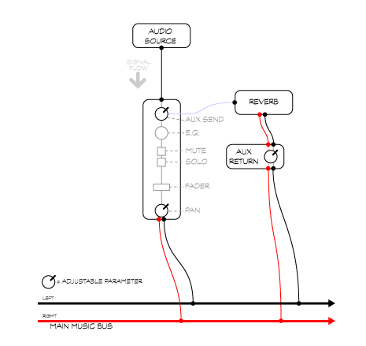
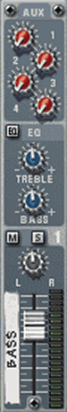
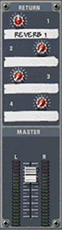

Mixers and Signal Path:
In general, audio signals enter a mixer at an input, and then travel through a channel strip where various parameters may be controlled, such as the volume level, placement in the stereo image, and tone quality. The aux send is used to control the amount of signal that is routed outside the mixer to a device like a reverb processor. The aux return controls how much of the processed signal is brought back to the main mixed signal.

The signal path in a mixer
Compare the diagram above with the channel strip and master section in the Reason mixer.
|  |
 |
Channel Section Routes signals to and from external devices |
Master Section Controls the output of the entire mixer.
|